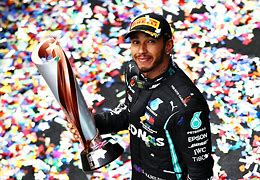

LEWIS HAMILTON
lewis hamilton epta campeão mundial de fórmula 1, lewis é um piloto inglês, nascido em 7 de janeiro de 1985.
Acumulou passagens pela Mclaren, Mercedes e atualmente na Ferrari, onde busca o sonhado Octa
campeonato vencido. Em 2008, ganhou o Prêmio Laureus de revelação do ano e em 2020, Prêmio Laureus
de atleta masculino do ano.
Em 2016 travou uma batalha épica com seu companheiro de equipe na Mercedes, Nico Rosberg, campeonato que so foi decidido na
última prova no circuito de Yas Marina em Abu Dabhi, Rosberg chegou a tirar a pintura de seu capecete para ser mais rápido
que Hamilton, no final Nico Rosberg levou o troféu de piloto.

2008 – McLaren
2014 – Mercedes
2015 – Mercedes
2017 – Mercedes
2018 – Mercedes
2019 – Mercedes
2020 – Mercedes